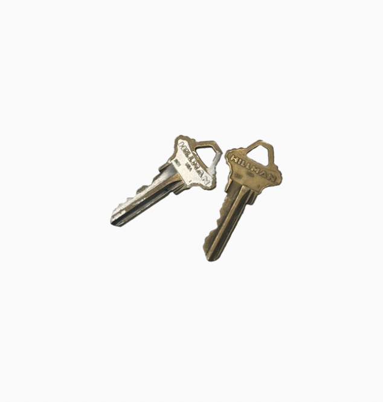

Keys

Two Keys
Size
2*1 inches
Timeline
Owned just over a month
Released Unknown
Description
A set of two keys, one for the entrance to the house and one for the door. Just got it after moving in to a new place. The two are nearly identical, which makes them hard to distinguish especially when it's dark.
Memories
Trying to make more memories.
Dreams
I should find a way to carry them more securely.
Wonders
But I wonder if there could be memories that I can make with these.